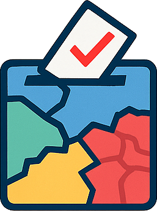

Trento nel seggio 2025 è un progetto realizzato da Maurizio
Napolitano a solo scopo ludico, per sperimentare nuove modalità di
visualizzazione dei dati elettorali in modo accessibile e interattivo.
Il codice sorgente è disponibile su GitHub
I dati visualizzati provengono dal sito ufficiale del Comune di Trento:
https://www.comune.trento.it/.../Affluenze-e-risultati-elezioni-amministrative-4-maggio-2025
Le sezioni elettorali rappresentano l’insieme dei numeri civici associati a
ciascuna sezione. Questo non significa che ogni persona residente in quegli indirizzi abbia
votato: si tratta di una rappresentazione delle aree di riferimento per ogni sezione, sulla
base dei dati disponibili.
Il calcolo dei voti ai candidati sindaci e alle liste è fatto sulla base delle preferenze
espresse per i candidati di ciascuna lista, pertanto sono esclusi i voti diretti ai
soli candidati sindaci o alle liste senza preferenza.